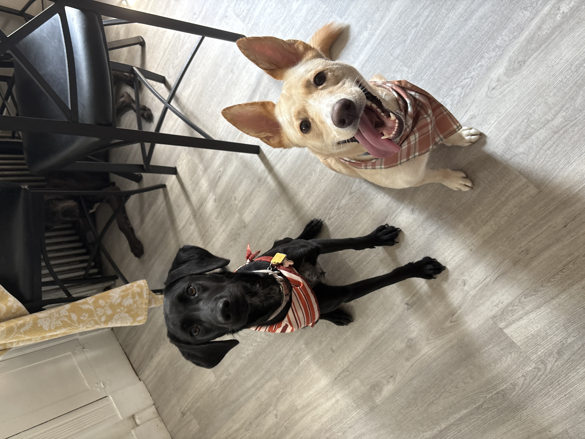
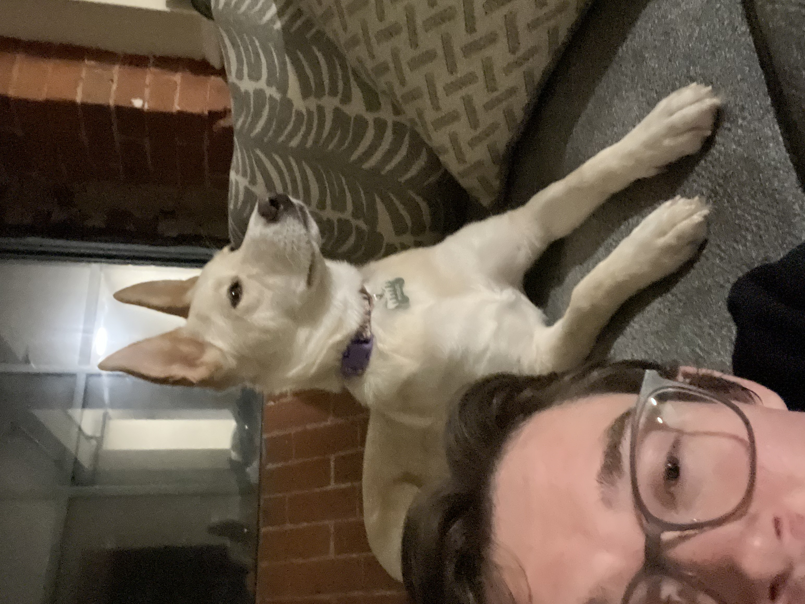
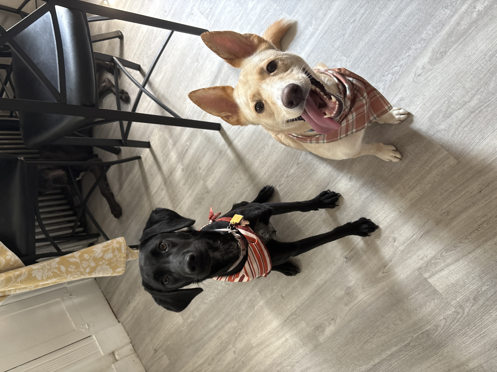
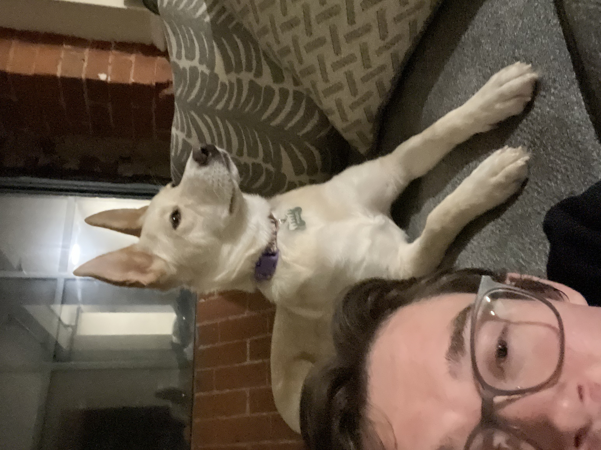
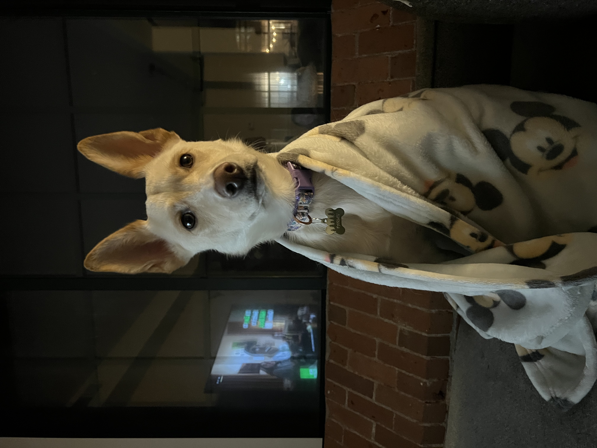
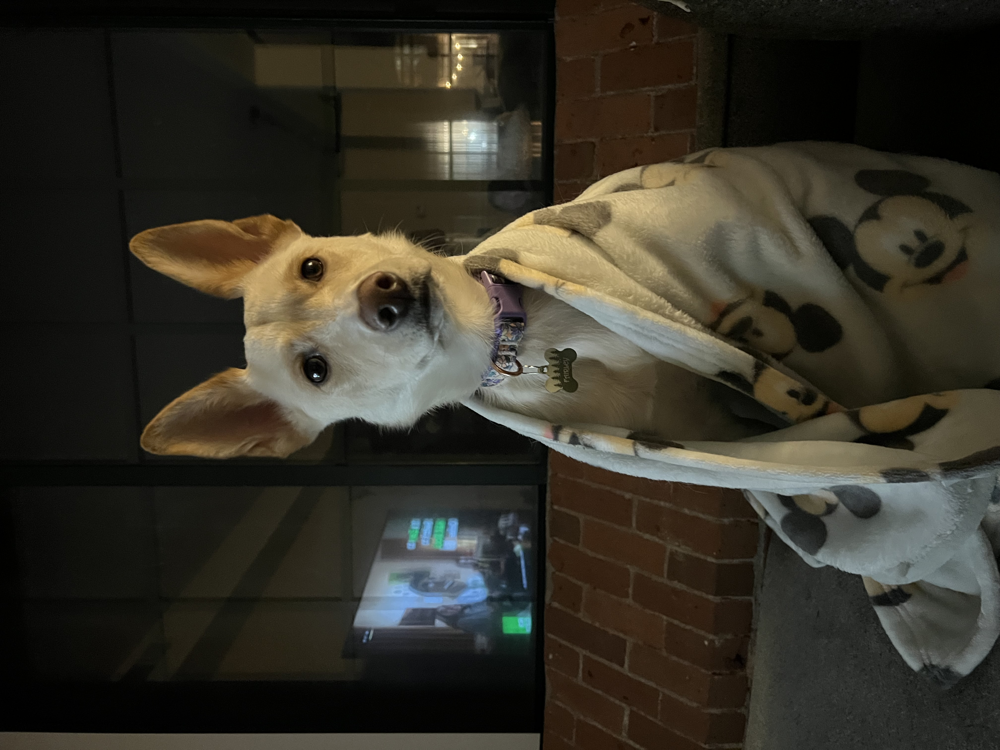
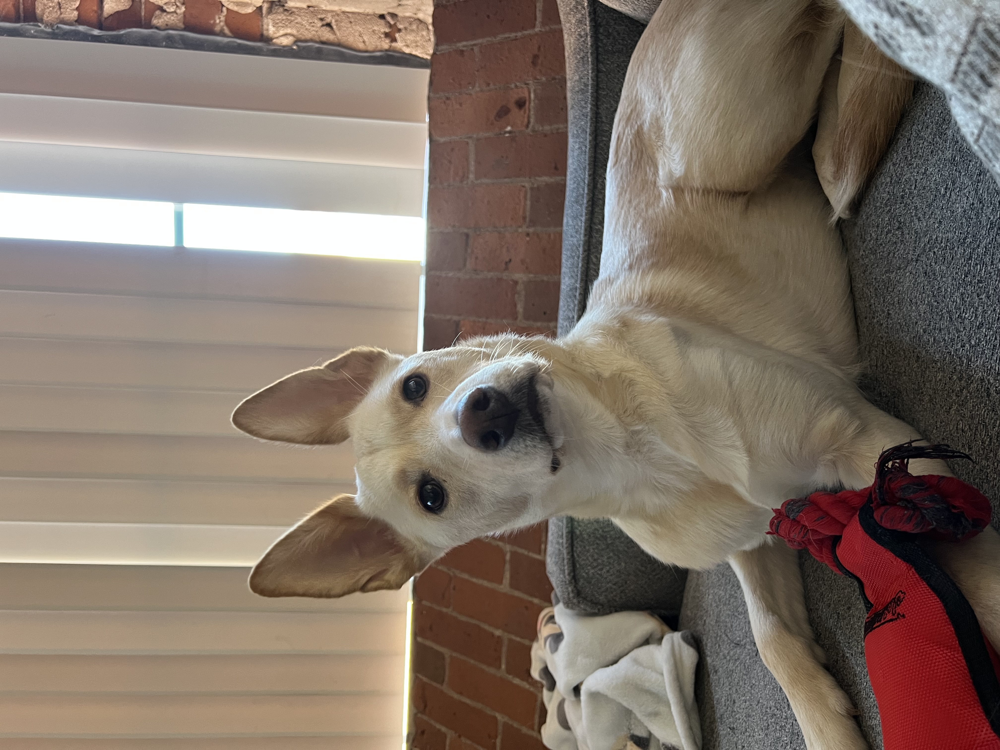
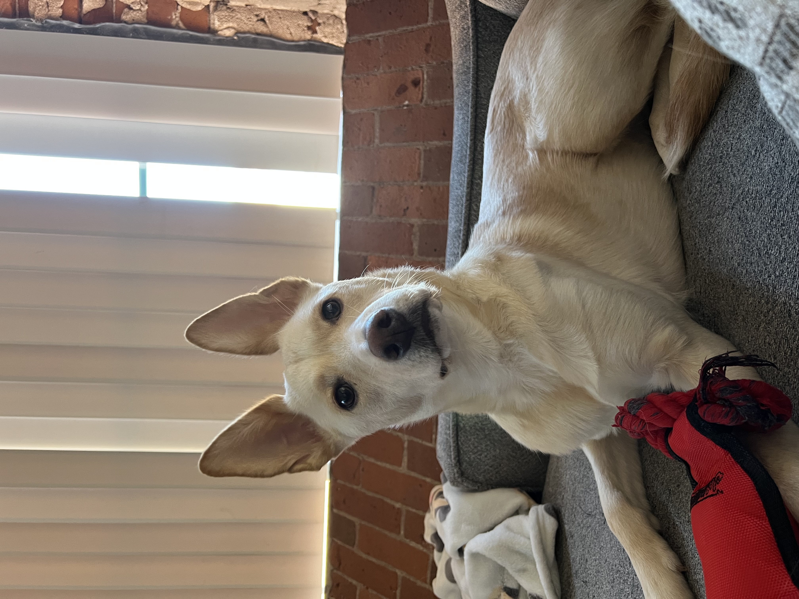

Background
Education:
Bachelor of Science in Mechanical Engineering (2019–2023)
University of Hartford, West Hartford, CT
- Dean’s List: Fall 2019, Spring 2020, Spring 2021, Fall 2022
- President’s List: Fall 2021
- GPA: 3.65 overall
About Me
My interest in engineering developed from a natural curiosity about how things work and a desire to understand systems beyond the surface level. I’ve always been drawn to problem solving that involves both analytical thinking and hands on application, which ultimately led me to pursue mechanical engineering.
I earned my degree in Mechanical Engineering to build a strong foundation in design, analysis, and manufacturing principles. Throughout my education, I focused on applying theory through projects and practical work, developing skills in CAD, design iteration, and structured problem solving.
I’m currently part of a rotational engineering program, where I’ve been exposed to different roles and ways engineering shows up in the real world. That experience has helped me better understand what I enjoy most and where I want to continue growing as an engineer.
Outside of work, I’m constantly working on projects of my own. I run multiple 3D printers, design and test my own models, and enjoy the full process from idea to design and iteration. I also enjoy staying active, especially snowboarding, getting outdoors, and spending time with my three dogs Fairley, Willow, and Hopper.
This site is a mix of my professional work and my personal story. It highlights the projects I’ve worked on, the skills I’m developing, and the experiences that continue to shape my interest in engineering.
Life Photo Gallery


 




 

 
